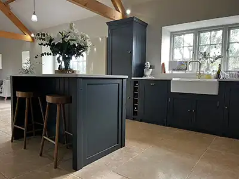

Our Step-by-Step
Respray Process
We don't just paint over the old. We completely remanufacture your surfaces using our meticulous, industry-leading 5-step preparation and spraying system.
Preparation is Everything
The secret behind a flawless, durable finish isn't just the paint—it's what happens before a single drop of paint is ever sprayed. At Chameleon Spray Painting Co., 80% of our time is spent on meticulous preparation. This unwavering attention to detail ensures superior adhesion, ultimate durability, and a factory-smooth result that hand-painting simply cannot replicate.
The Chameleon Method
Removal of Doors
We begin by carefully mapping and labeling your kitchen or furniture setup. We then expertly remove all doors, drawer fronts, side panels, plinths, and pelmets.
Why we do this:
Taking these removable elements to our specialized workshop dramatically reduces disruption, dust, and fumes in your home. It also allows us to spray in a highly controlled, dust-free environment for the ultimate flat finish.


Preparation
This is the most crucial step. Back at our workshop, every single item undergoes a rigorous deep clean using industrial degreasers to remove years of cooking oils, hand greases, and grime.
- Deep Degreasing: Stripping away invisible contaminants.
- Mechanical Keying: We thoroughly sand all surfaces to create a "key"—a microscopic texture that allows the new primer and paint to bite into the surface permanently.
- Damage Repair: Filling minor scratches, dents, or old handle holes if you're upgrading your hardware.
Professional Spraying
With the surfaces perfectly prepped, we move into our dedicated spray booths. Using state-of-the-art HVLP (High Volume Low Pressure) spray systems, we apply the coatings.
The Coating Process
Rather than slapping on a thick coat that can drip or chip, we build strength through layers.
3–4 Thin Coats
Specialist Paint


On-Site Work
Once the workshop spraying is complete and curing, our team arrives at your home to tackle the fixed elements—the kitchen carcass, end panels, plinths, and cornices that couldn't be removed.
We apply heavy-duty protective sheeting to your floors, worktops, appliances, and walls. We then repeat our strict prep process (degrease & key) on the fixed frames before spraying them on-site. When we remove the masking tape, all that remains are razor-sharp, flawless lines.
Refitting & Quality Check
The final stage brings your vision to life. We safely transport your newly cured, beautifully sprayed doors and panels back to your home.
-
Precision Hanging
Doors are rehung, and hinges are finely adjusted to ensure everything sits level and true.
-
Hardware Installation
We attach your existing handles, or carefully drill and fit your brand new chosen hardware.

See the Transformation
Drag the slider below to witness the dramatic difference our 5-step process makes.
Why Our Process Outperforms
No Brush Marks
Hand-painting with a brush or roller leaves inevitable streaks, stipples, and lap marks. Our HVLP spray application atomises the paint, resulting in an impeccably smooth, factory-grade finish.
Supreme Durability
Because we mechanically key the surface and apply multiple thin coats of highly specialized architectural coatings, our finishes resist chipping, scratching, and peeling under daily use.
Massive Cost Savings
By salvaging your perfectly good cabinets and relying on our transformative spray process, you can save up to 80% compared to the cost of ripping out and replacing your entire kitchen.
Process FAQs
Everything you need to know about what happens before, during, and after your quote.
Most kitchen resprays take between 7 to 10 days from the moment we remove the doors to the day we refit them. However, we are only physically in your home for about 1-2 days (to mask, spray the frames, and refit), ensuring absolute minimal disruption to your daily life.
No, you don't need to empty your entire kitchen! We only require you to pull back items about an inch or two from the front edge of the shelves. This gives us enough room to securely tape up our protective masking so no paint dust enters your cupboards.
Because 80% of the spraying happens in our workshop, the fumes in your home are kept to a minimum. For the on-site work, we use robust extraction systems and highly ventilated setups to clear any remaining odors quickly. Any mild paint smell usually dissipates entirely within 24-48 hours.
Yes! This is the perfect time to upgrade your hardware. Let us know during the quotation phase. During Step 2 (Preparation), we will fill your old handle holes perfectly flush, spray over them, and precisely measure and drill new holes for your updated handles before refitting.
Ready to Transform Your Space?
Do you have any other questions before we finalise your quote? Our expert team is ready to provide you with a fast, free, no-obligation estimate and guide you through selecting the perfect colour.